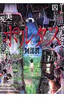

阿部潤（あべ じゅん）
ポルタス

01TBD
忘却のサチコ

TBD
データベース
| タイトル | ISBN | 絵 | 作 | 発行 | URL | 紙 | 電子 | その他1 | その他2 |
|---|---|---|---|---|---|---|---|---|---|
| ポルタス | 9784091510297 | 阿部 潤 | 小学館 | url | Y | 1048 | |||
| 忘却のサチコ（01） | 9784091866707 | 阿部 潤 | 小学館 | url | Y | 1815 | |||
| 忘却のサチコ（02） | 9784091868800 | 阿部 潤 | 小学館 | url | Y | 1814 | |||
| 忘却のサチコ（03） | 9784091871756 | 阿部 潤 | 小学館 | url | Y | 1813 | |||
| 忘却のサチコ（04） | 9784091873378 | 阿部 潤 | 小学館 | url | Y | 1812 | |||
| 忘却のサチコ（05） | 9784091874696 | 阿部 潤 | 小学館 | url | Y | 2953 | |||
| 忘却のサチコ（06） | 9784091876164 | 阿部 潤 | 小学館 | url | Y | 1811 | |||
| 忘却のサチコ（07） | 9784091877345 | 阿部 潤 | 小学館 | url | Y | 1810 | |||
| 忘却のサチコ（08） | 9784091892393 | 阿部 潤 | 小学館 | url | Y | 2952 | |||
| 忘却のサチコ（09） | 9784091894021 | 阿部 潤 | 小学館 | url | Y | 1809 | |||
| 忘却のサチコ（10） | 9784091895349 | 阿部 潤 | 小学館 | url | Y | 3235 | |||
| 忘却のサチコ（11） | 9784091896391 | 阿部 潤 | 小学館 | url | Y | 3643 | |||
| 忘却のサチコ（12） | 9784098604098 | 阿部 潤 | 小学館 | url | Y | 3929 | |||
| 忘却のサチコ（13） | 9784098605293 | 阿部 潤 | 小学館 | url | Y | 3930 | |||
| 忘却のサチコ（14） | 9784098606429 | 阿部 潤 | 小学館 | url | Y | 3927 | |||
| 忘却のサチコ（15） | 9784098607891 | 阿部 潤 | 小学館 | url | Y | 3926 | |||
| 忘却のサチコ（16） | 9784098610495 | 阿部 潤 | 小学館 | url | Y | 4339 |